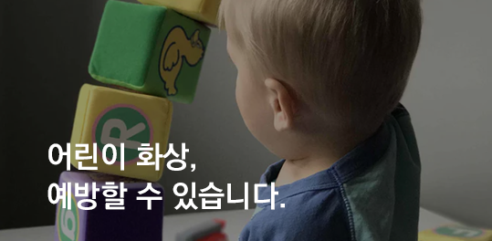
1.전기포트는 아이 손이 닿지 않는 곳에서 사용하기
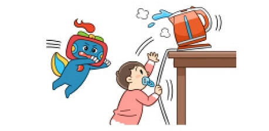 전기선을 잡아 당겨 뜨거운 물이 쏟아져 화상을 입는 사례가 늘고 있습니다. 이 경우 화상의 정도가 심하고, 범위가 넓은 경우가 많습니다.
쓰고 남은 뜨거운 물에 아이들이 다치는 경우가 많으므로 남은 물은 반드시 비워야 합니다.2.아이를 안고 라면이나 커피 등 뜨거운 음식 먹지 않기
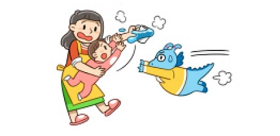 아이가 손으로 그릇을 치거나 순식간에 움직이면서 뜨거운 국물이 쏟아져 화상을 입게 됩니다.
보호자가 컵을 들고 있다가 기침을 하면서 커피 등이 쏟아져 아이가 화상을 입을 수 있습니다.3.전기밥솥은 바닥에 내려놓지 않기
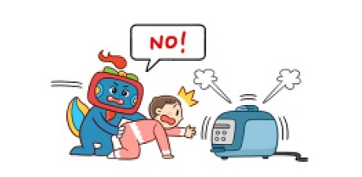 뜨거운 증기를 만져 주로 손가락과 손바닥이 다치게 되며, 화상의 정도가 심하여 손가락 관절에 운동장애를 가져오게 되는 경우가 많습니다.4.아이를 업고 음식을 조리하지 않기
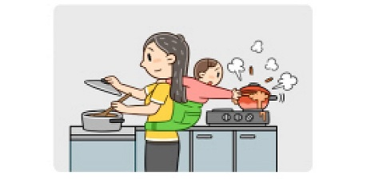 아이가 업힌 채로 손을 앞으로 뻗어 냄비 손잡이를 잡아 당기면서 내용물을 쏟아 화상을 입는 경우가 있습니다.5.정수기는 아이 손에 닿지 않는 곳에 설치하기
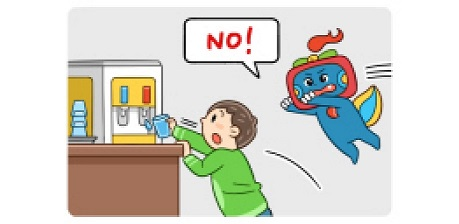 손으로 온수꼭지를 눌러 뜨거운 물에 화상을 입는 경우가 많습니다. 온수가 나오는 정수기를 쓰는 경우 안전밸브를 꼭 설치해야 합니다.
찬물이 나오는 곳에 입을 대고 먹다가 온수꼭지를 누르게 되어 이마에 화상을 입게 되는 경우도 있습니다.6.이유식은 식힌 후에 그릇에 담기
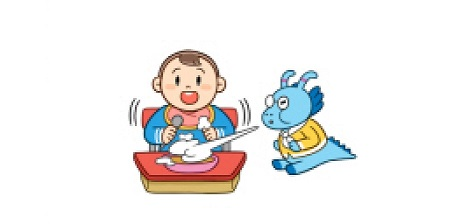 아이가 이유식에 손을 넣고 휘저어 화상을 입게 됩니다..
물보다 끈적거리므로 피부와 접촉 시간이 길기 때문에 화상의 정도가 심한 경우가 많습니다.7.프라이팬, 냄비 등의 조리 기구는 사용 후 아이 손에 닿지 않는 곳에서 식히기
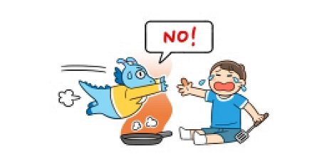 뜨거운 물체에 닿아서 생기는 화상은 화상의 정도가 심하여 치료 기간도 길어지고, 흉터를 남기는 경우가 많습니다.8.거실 바닥에 앉아 고기를 구워먹지 않기
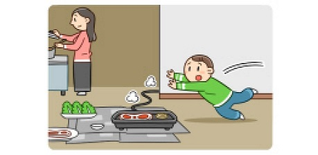 아이가 뛰어 놀다가 넘어져 뜨거운 그릴 및 기름에 손바닥을 짚으면서 넘어져 화상을 입는 경우가 많습니다.9.사용하지 않은 콘센트는 안전덮개로 막아두기
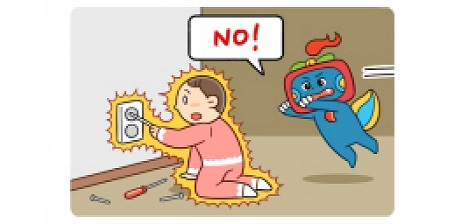 쇠 젓가락이나 머리핀 등을 콘센트 구멍에 끼워 넣는 경우 전기화상을 입게 됩니다.
전기화상은 치료 기간이 길고, 인대, 근육 등에 손상을 입는 경우가 많습니다.10.러닝머신 전기 코드를 빼 두기
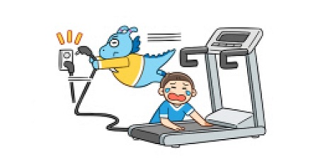 손가락이나 손이 끼인 채로 벨트가 돌아가는 경우 마찰열에 의해 화상을 입게 됩니다.
손가락이나 손을 쉽게 빼내지 못하여 화상의 정도가 깊은 경우가 많습니다.11.라이터나 성냥 등은 아이 손이 닿지 않는 곳에 보관하기
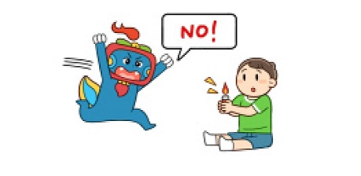 옷에 불이 붙어 심한 화상을 입을 수 있으며, 집이 화재로 번지게 되면 유독가스에 질식하는 경우가 생길 수 있습니다.12.세면대에서 아이를 씻기지 않기
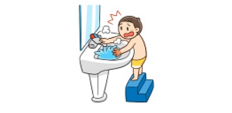 아이 또는 보호자의 부주의로 수도꼭지 손잡이를 온수 쪽으로 돌리게 되면 갑자기 나오는 뜨거운 물에 화상을 입을 수 있습니다.
뜨거워진 수도꼭지에 아이 몸의 일부가 닿아서 화상을 입는 경우도 있습니다.13.욕조에서 목욕할 때 뜨거워진 수도꼭지 부분은 마른 수건으로 감싸두기
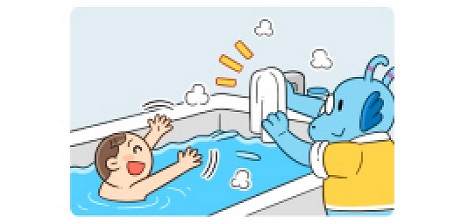 뜨거워진 수도꼭지와 접촉하여 화상을 입을 수 있습니다.14.샤워기를 사용하여 아이를 씻기지 않기
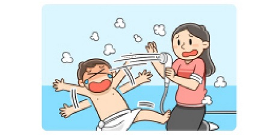 특히 온수기나 연수기를 사용하는 경우, 물 온도가 일정하게 유지 되지 않아 씻는 도중 갑자기 뜨거운 물이 나와 화상을 입는 경우가 종종 있습니다.
넓은 범위에 화상을 입는 경우가 대부분이어서 입원치료를 해야합니다.
온도계나 피부가 얇은 팔꿈치 안쪽을 이용하여 목욕물 온도를 확인합니다.15.다리미를 쓰고 난 후 아이의 손에 닿지 않는 곳에 두기
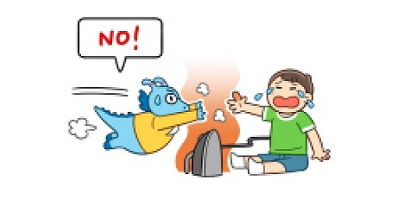 전선을 잡아당겨 높은 곳에 있던 다리미가 떨어지면서 얼굴, 팔, 다리 등에 화상을 입거나, 다리미를 직접 만져 화상을 입을 수 있습니다.
다리미에 의한 화상은 상처가 깊은 경우가 대부분이며, 치료 기간이 긴 경우가 많습니다.16.헤어 드라이기, 고데기 등을 쓰고 아이 손에 닿지 않는 곳에 두기
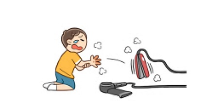 본체나 쇠 부분이 달구어져 있어서 아이들이 만지다가 화상을 입게 됩니다.17.곰국 등 뜨거운 국이 담긴 냄비를 욕실이나 베란다 등의 바닥에 두고 식히지 않기
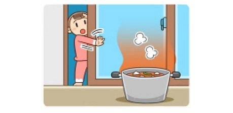 아이가 넘어져 빠지게 되면 잘 일어나지 못하므로 화상의 정도가 깊은 경우가 많고, 또한 화상의 범위가 넓어 중증화상을 입는 경우가 대부분입니다.